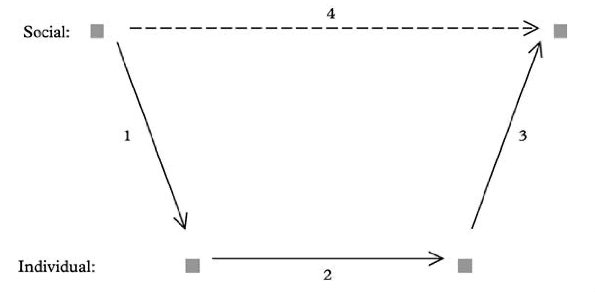
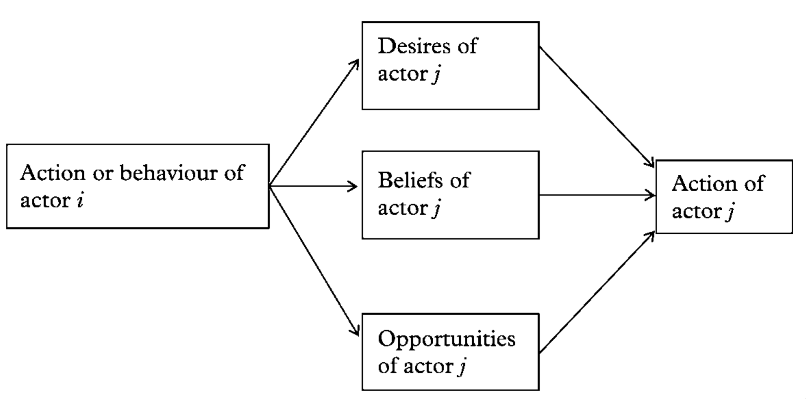
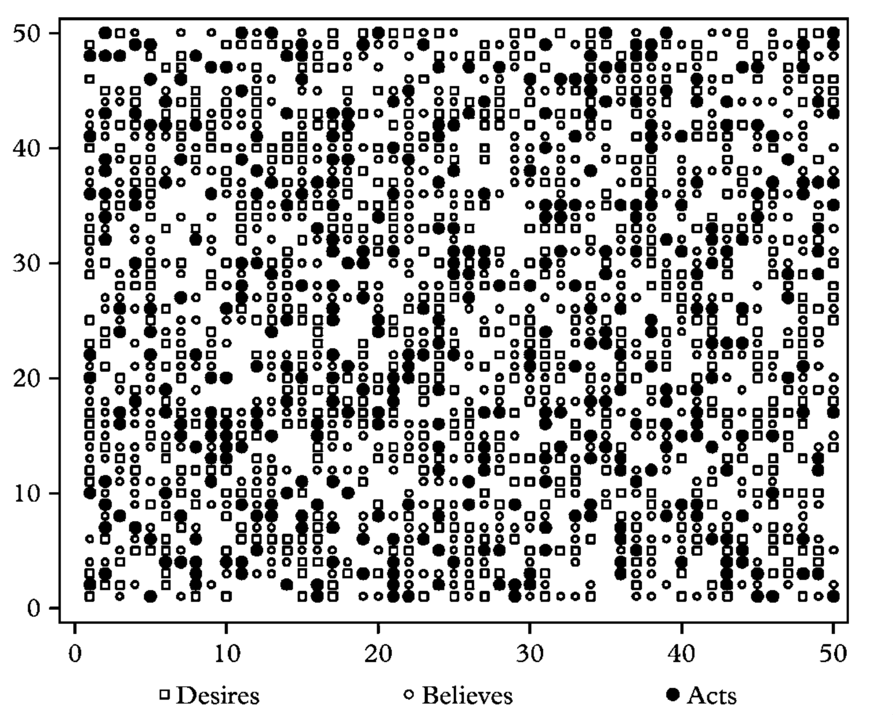
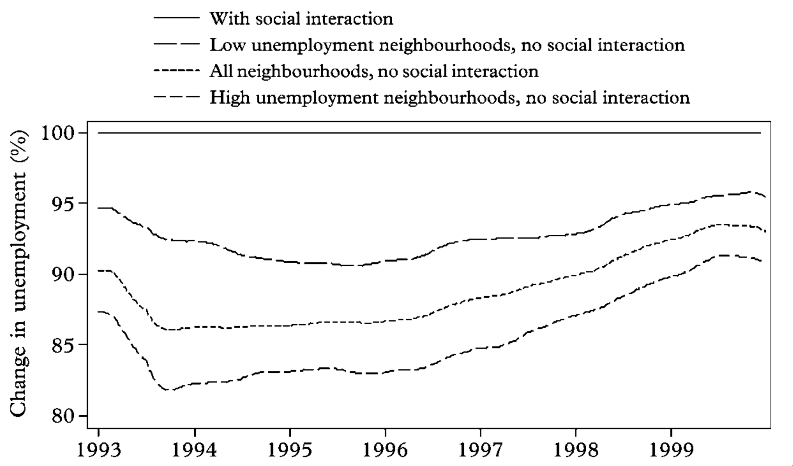

Figure 1: Hedstrom, P. (2005). Dissecting the Social: On the Principles of Analytical Sociology. Cambridge: Cambridge University Press. doi:10.1017/CBO9780511488801
"[the book discusses] some of the basic principles of analytical sociology and soughts to clarify what a mechanism-based explanatory strategy looks like" (p. 145).

Figure 2: Coleman's micro-Macro Graph
Three types of explanation.

Figure 3: D.B.O. Theory

Figure 4: Initial patterns of beliefs, desires and actions in a population of 2,500 virtual actors.

Figure 5: Unemployment levels and social interactions in low and high unemployment neighbourhoods in the Stockholm metropolitan area.